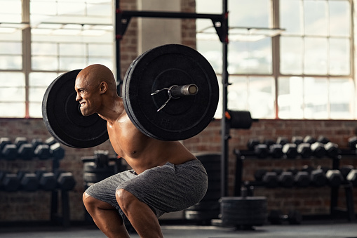
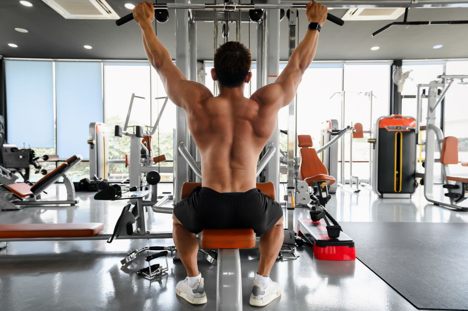

A atividade física em si, não é algo simples para quem nunca experimentou, mas tem um papel extremamente importante quando se trata de bem-estar físico e mental. Existem diversas formas de colocar seu corpo em movimento, despertando também várias habilidades diferentes. Para criar seu treino, você terá que entender os 4 conceitos a seguir:
-
Exercícios Aeróbicos:
Os exercícios aeróbicos são aqueles em que há o uso de oxigênio para gerar energia e normalmente são realizados por um longo período e possuem intensidade leve a moderada.(REDAÇÃO Metrópoles, 2024)

-

Exercícios de Força:
O treino de força é um treino feito com maior número de séries, repetições baixas, cargas elevadas e tempos de descanso longos, que promove o ganho de massa muscular, melhora a postura, favorece o emagrecimento e reduz o risco de lesões.(REDAÇÃO Metrópoles, 2024)
-
Exercícios de Hipertrofia:
Exercícios de hipertrofia são aqueles feitos em menos séries (se comparados aos treinos de força) e que têm uma quantidade moderada ou alta de repetições, mas uma carga não tão alta. O intervalo entre um exercício e outro nesse tipo de treino é mais curto.(REDAÇÃO atletis, 2023)
 -
Exercícios de Equilíbrio:
São exercícios que em sua maioria trabalham muito a parte de coordenação motora e sua capacidade de se manter em pé, sem perder estabilidade. Podem ser usados para o aumento da agilidade também. (REDAÇÃO Metrópoles, 2024)
-
Exercícios de Alongamento e Flexibilidade:
São exercícios que podem ser usados tanto para aumentar sua capacidade elástica, tanto para evitar lesões ao realizar um exercício. É muito comum serem realizados alongamentos antes de esportes que envolvam muito impacto ou um deslocamento de força muito alto.(REDAÇÃO Metrópoles, 2024)